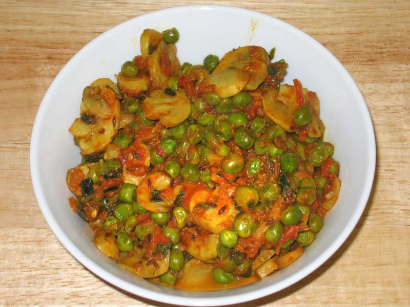

Ingredients:
1)1-1/2 cups - Green peas (Mutter)
2)200 gms - Mushrooms
3)4 - Cardamon(green)
4)1" - Cinnamon
5)2 - Onions
6)1-1/2 tbsp - Ginger paste
7)1 tbsp - Garlic paste
8)3-4 - Tomatoes
9)1 tbsp - Chilli powder
10)1 tbsp - Coriander powder
11)1 tsp - Turmeric
12)1 tsp - Garam masala powder
13)1/2 cup - Cashewnut paste
14)4 tbsp - Oil
15)Salt To Taste
How to make Mushroom Matar :
1.Clean, wash and cut the mushrooms into medium pieces and chop onions finely.
2.Heat oil in pan. Saute green cardamoms, cinnamon stick & onions till golden brown.
3.Add ginger garlic paste and cook for 1/2 a minute.
4.Add tomatoes and cook till oil leaves the sides.
5.AddChilli powder, coriander powder, turmeric, garam masala, salt and cook for 2 minutes.
6.Lastly dissolve the cashewnut paste in one cup of water and mix well and add it to the pan. Add one more cup of water and bring it to boil.
7.Add the mattar (green peas) and mushrooms and cook till the peas are fully cooked. Once done, serve the mushroom matar with rice or roti.